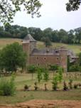

|
|
RODEZ&CHATEAU DU COLOMBIERSamedi 18 septembre 2010
PRIX DE LA JOURNEE / 26 euros
7h15 : RDV à Toy's Rus Portet sur Garonne 7h30 : Départ
Rodez : Partez à la découverte des richesses d'une ville bimillénaire, à travers le charme de ses ruelles : la cathédrale gothique en grès rouge, les hôtels particuliers, témoignage de la prospérité de la ville au XVe et XVIe siècles, le palais épiscopal,�
Château du colombier :  Sur la route des Seigneurs du Rouergue, aux portes de Rodez, dans une combe, s'élève le Château du ColombierHistoire d'animaux, histoire des jardins des simples, histoires des hommes, le Château du Colombier vous raconte leurs vies d' hier et d'aujourd'hui. Une promenade en plein c�ur de la campagne à la découverte d'un bestiaire vivant, vous rencontrerez « Brun ours » Roi des animaux jusqu'au XII siècle. Puis à la croisé des chemins, vous observerez au travers d'un tunnel de verre le lion, déjà bien connu au Moyen Âge. A l'abri des regards au pied du château, le jardin médiéval, cadre idéal du roman courtois, ou le parfum épicés des « Galéga » et des « roses de Damas», vous fera voyager au temps des croisades. Route de retour,
19h00 / 19h15 : Arrivée en début de soirée.
BULLETIN D'INSCRIPTION JOURNEE DU SAMEDI 18 SEPTEMBRE 2010 RODEZ � CHATEAU DU COLOMBIER A retourner avant le 15 AOUT 2010
NOM ����������. PRENOM ������ Tél��������. ADRESSE Nbre de participants Vous pouvez aussi réserver par téléphone : • sur le répondeur AZF du 05 62 11 45 50 ou auprès de Michelle AUZER au 06 76 84 21 77 Votre inscription ne sera définitive qu'à réception du chèque adressé à AZF-MEMOIRE et SOLIDARITE. Aucun remboursement ne sera effectué
|
||
|
||